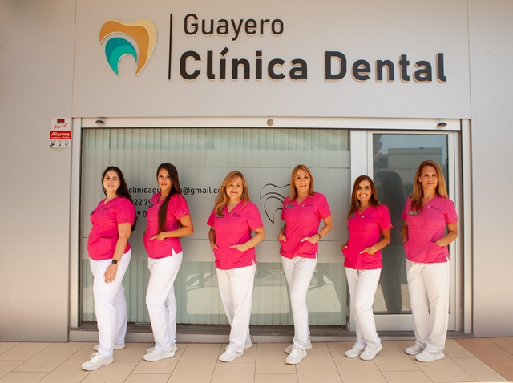

Ortodoncia · Guía destacada
Invisalign o brackets: diferencias y qué opción elegir
Compara el uso diario, la planificación y las preguntas que conviene hacer antes de elegir tu tratamiento de ortodoncia.
Leer la comparaciónGuías claras, escritas por nuestro equipo, para cuidar tu sonrisa y entender tus tratamientos antes de dar el paso.
Ortodoncia · Guía destacada
Compara el uso diario, la planificación y las preguntas que conviene hacer antes de elegir tu tratamiento de ortodoncia.
Leer la comparación01 Guías para pacientes
Implantes y recuperación
Qué esperar durante la colocación y después: anestesia, molestias, cuidados y preguntas para preparar tu recuperación.
Leer el artículoImplantes y hueso
Resuelve tus dudas sobre la valoración, el injerto óseo, los tiempos del tratamiento y las alternativas que puedes consultar.
Leer el artículoImplantes dentales
Qué influye en el precio, qué debe incluir un presupuesto y respuestas a tus dudas sobre las fases, las molestias y el cuidado.
Leer la guía
02 Bienvenidos
14 de julio de 2022 · Clínica Dental Guayero
En 1999 abrimos al público en Los Cristianos, ampliando la oferta sanitaria y ofreciendo una atención cercana. Desde el primer momento, la clínica ha tenido claro su objetivo: cuidar la salud bucodental con profesionalidad y confianza.
Conocer la clínicaPide tu cita
Llámanos, escríbenos por WhatsApp o déjanos tus datos y te ayudaremos a encontrar el mejor momento para tu visita.